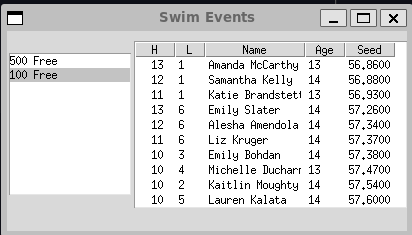

---
title: Using the Factory Pattern to create an Event Seeding System
---
classDiagram
class Event {
<<abstract>>
Event: +get_seeding() Seeding
}
class TimedFinalEvent
class PreliminaryEvent
Event <|-- TimedFinalEvent
Event <|-- PreliminaryEvent
class Seeding {
<<abstract>>
Seeding: +get_swimmers() List~Swimmer~
}
class StraightSeeding
class CircleSeeding
Seeding <|-- StraightSeeding
Seeding <|-- CircleSeeding
Event --> Seeding : get_seeding()
TimedFinalEvent ..> StraightSeeding : Creates
PreliminaryEvent ..> CircleSeeding : Creates
class Swimmer {
Swimmer: +String first_name
Swimmer: +String last_name
Swimmer: +int age
Swimmer: +String club
Swimmer: +time seed_time
Swimmer: +get_name() String
}
Seeding --> Swimmer : get_swimmers()
Chapter 6: The Factory Method Pattern
Notes
- Chapter 5 demonstrates the concept of a simple factory
- The Factory Concept is a fundamental and common pattern in Object-Oriented Design
- A single class acts as an authority deciding which subclass of a hierarchy is instantiated
- The Factory Method Pattern extends this concept
- No single class decides which subclass to instantiate
- Superclass defers construction to each subclass
- Programs define an abstract class that creates objects
- Subclasses decide which object to create
- As a simple example, consider swimmers seeded into swim lanes
- Swimmers competing in multiple heats are first sorted to compete from slowest in early heats to fastest in the last heat
- Within a heat, the fastest swimmers are in the centre lanes
- This is a process called straight seeding
- In a championship, swimmers often swim an event twice
- In preliminaries, everyone competes
- In finals the top 12 of 16 compete against each other
- To ensure greater equality, top heats are circle seeded
- Fastest three swimmers are in the centre lane in the fastest three heats
- Second fastest are in the lane next to the centre in the top three, etc.
- Swimmers competing in multiple heats are first sorted to compete from slowest in early heats to fastest in the last heat
- We want to create a program that can automatically perform this seeding for us
- Need to create a class hierarchy to represent events and their seeding
- The basic idea is as follows,
- An
Eventacts as a factory class forSeedingvia theget_seedingmethod - Concrete
Eventsubclasses redefineget_seedingto control how they are seeded- In this case to chose which
Seedingsubclass they want to use
- In this case to chose which
Swimmeris a utility class for keeping track of swimmers
- An
- The UML below shows the rough structure
The Swimmer Class
- The
Swimmerclass is a basic class designed to store information about a Swimmer- Namely,
- Name
- Age
- Club
- Seed time
- Seeded lane
- Heat
- Namely,
- We’ll use a common Python pattern for handling object creation which is to define a generic
__init__that accepts the required parametersWe then define class methods to handle the various ways that one might want to provide that data
- For example, from a text file
- Means we can extend to accept new formats like a database row by adding a new class method as opposed to re-tooling our
__init__ - This reduces coupling between the data storage format and the object creation mechanism
We provide a class method
from_strthat converts from a delimited string like on might get from a csv file- The rest of the class is a very simple class that just holds data
heatandlaneare set to \(0\) to denote they have not been set- Real heats and lanes are indexed from \(1\)
class Swimmer: """Represents a Swimmer competing in an Event Attributes ---------- first_name: str swimmer's first name last_name: str swimmer's last name age : int swimmer's current age in years club : str club the swimmer is representing seed_time : datetime.time swimmer's seed time heat: int swimmer's allocated heat, 0 represents an unallocated swimmer lane: int swimmer's allocated lane, 0 represents an unallocated swimmer """ @classmethod def from_string(cls, swimmer: str, delimiter=" ") -> Swimmer: """Create a swimmer from a delimited string Converts a delimited string into a `Swimmer`, the string is split into arguments to the `Swimmer` constructor by the delimiter, and must follow the structure below, where ``[x]`` represents a delimited chunk corresponding to the parameter `x` ``[first_name][last_name][age][club][seed_time]`` The parameters must be represented in the following formats, * `first_name` - `str` * `last_name` - `str` * `age` - `int` * `club` - `str` * `seed_time` - either `%M:%S.%f` or `%S.%f` Parameters ---------- swimmer : str swimmer represented as parameter delimited by the delimiter delimiter : str, optional The delimiting symbol uses to split the string, by default " " Returns ------- Swimmer swimmer described by the provided string Raises ------ ValueError Could not convert the provided string to a `Swimmer` instance """ swimmer_parameters = [ parameter for parameter in swimmer.split(sep=delimiter) if parameter ] if len(swimmer_parameters) != 5: raise ValueError( f"Swimmer requires 5 parameters, got {len(swimmer_parameters)}\n{swimmer_parameters}" ) swimmer_parameters = [parameter.strip() for parameter in swimmer_parameters] first_name = swimmer_parameters[0] last_name = swimmer_parameters[1] age = int(swimmer_parameters[2]) club = swimmer_parameters[3] seed_time = parse_time(swimmer_parameters[4]) return cls(first_name, last_name, age, club, seed_time)- The rest of the class is a very simple class that just holds data
We have a very simple
parse_timefunction which helps convert a string representing a seed time into an actualdatetime.timeimport datetime def parse_time(timecode: str) -> datetime.time: """Parse a seed timecode to a time Parameters ---------- timecode : str seed time represented in either `%M:%S.%f` or `%S.%f` ISO format Returns ------- `datetime.time` time corresponding to the provided time code Raises ------ ValueError Raised if `timecode` is not in a supported format """ try: time = datetime.time.strptime(timecode, "%M:%S.%f") except ValueError: time = datetime.time.strptime(timecode, "%S.%f") return time print("%M:%S.%f type time:", parse_time("30:30.5")) print("%S.%f type time:", parse_time("30.5"))%M:%S.%f type time: 00:30:30.500000 %S.%f type time: 00:00:30.500000Lastly, we define a standalone method that read’s a list of swimmers from a file and convert’s them to
Swimmerobjectsdef load_swimmers(filename: str, delimiter=" ") -> list[Swimmer]: """ Load swimmers from a delimited file Load's swimmer's from a delimited file into a list of `swim_events.Swimmer` instances. Does not populate their heat and lane. Assumes the file follow's the interface of `swim_events.Swimmer.from_string` Parameters ---------- filename : str path to the file containing swimmers, can be absolute or relative Returns ------- list[Swimmer] list of Swimmer objects corresponding to rows in the file """ # extract swimmers from file, slicing off the initial "idx " substring with open(filename, "r") as f: swimmers = [ Swimmer.from_string(line.partition(" ")[2], delimiter=delimiter) for line in f.readlines() ] return swimmers
The Event Class
- The
Eventclass acts as our abstract base class for defining what seeding objects should be created- It is the core of our factory method pattern
- We define an abstract method
seedingwhich returns aSeedinginstance- This is the factory method that is overwritten by specific subclasses
- Otherwise it provides an initialiser that accepts a sequence of
Swimmerinstances and the number of lanes in each heat
class Event(abc.ABC): """ Abstract Class representing a generic swimming event Subclasses should override the `seeding` factory method to create the appropriate seeding instance for the event type Attributes ---------- swimmers: Sequence[Swimmer] swimmers competing in the event number_of_lanes: int number of lanes in each heat """ def __init__(self, swimmers: Sequence[Swimmer], lanes: int): """ Create a new event instance with the provided swimmers and the given number of lanes per heat Parameters ---------- swimmers: Sequence[Swimmer] Swimmers competing in the event lanes: int Number of lanes per heat """ self.number_of_lanes = lanes self.swimmers = swimmers @abc.abstractmethod def seeding(self) -> Seeding: """ Create the seeding for the event Returns ------- Seeding The seeding methodology to be used for the event """ pass - We then define two subclasses
PreliminaryEvent- Implements
seedingto return aCircleSeedinginstance
class PreliminaryEvent(Event): """ A Preliminary Swimming Competition Event with circle seeding """ @override def seeding(self) -> Seeding: return CircleSeeding(self.swimmers, self.number_of_lanes)- Implements
TimedFinalEvent- Implements
seedingto return aStraightSeedinginstance
class TimedFinalEvent(Event): """ A Timed Swimming Competition Event using straight seeding """ @override def seeding(self) -> Seeding: return StraightSeeding(self.swimmers, self.number_of_lanes)- Implements
The Seeding Class
The hierarchy to define now is the
Seedingabstract base classThis class implements two behaviours
- It stores the swimmers competing in an event in a sorted list in increasing seed time
- Seeds the swimmers into heats and lanes via the
seedabstract method- Called as part of the
__init__method
- Called as part of the
class Seeding(abc.ABC): """ Abstract Class representing a methodology for seeding an event Distributes a roster of swimmer's across heats and lanes according to the desired seeding method. Seeding is performed on object creation and does not require an explicit call to `seed` Subclasses should override the `seed` method to implement the desired seeding methodology Attributes ---------- swimmers: Sequence[Swimmer] swimmers to be seeded, sorted by increasing seed time number_of_lanes: int number of lanes in each heat number_of_heats: int number of heats in the event """ def __init__(self, swimmers: Sequence[Swimmer], number_of_lanes: int): self.swimmers = sorted(swimmers, key=lambda x: x.seed_time) self.number_of_lanes = number_of_lanes self.number_of_heats = 0 self.seed() @abc.abstractmethod def seed(self) -> None: """ Seed swimmers into a designated heat and lane Each swimmer in `self.swimmers` must have their `heat` and `lane` attribute assigned after `seed` is called. A `(heat, lane)` pair must be unique """ passWe then implement two subclasses
StraightSeedingandCircleSeedingStraightSeedinginherit’s directly fromSeedingto implement it’sseedmethodclass StraightSeeding(Seeding): """ Straight seeds an event Heats are seeded slowest to fastest, with the fastest swimmers in the center lanes """ @override def seed(self) -> None: """ Seed swimmers into a designated heat and lane Heats are seeded slowest to fastest, with the fastest swimmers in the center lanes """ # calculate number of swimmers in the last heat, we want it to be a minimum of three # unless there are only two competitors n_swimmers_in_last_heat = len(self.swimmers) % self.number_of_lanes if n_swimmers_in_last_heat < 3: n_swimmers_in_last_heat = min(3, len(self.swimmers)) # calculate number of lanes in the normal heat # and the total number of heats remaining_lanes = len(self.swimmers) - n_swimmers_in_last_heat self.number_of_heats = len(self.swimmers) // self.number_of_lanes + ( 1 if remaining_lanes else 0 ) # generate the lane orderings and set to repeat for as we cycle over the heats lane_ordering = itertools.cycle(self.generate_lane_order()) # cycle over the heats performing the seeding for idx, (lane, swimmer) in enumerate( zip(lane_ordering, self.swimmers[:remaining_lanes]) ): swimmer.lane = lane swimmer.heat = self.number_of_heats - (idx // self.number_of_lanes) # if no left over heat, return now if not n_swimmers_in_last_heat: return # otherwise seed the final heat for lane, swimmer in zip( self.generate_lane_order(), self.swimmers[-n_swimmers_in_last_heat:] ): swimmer.lane = lane swimmer.heat = 1 def generate_lane_order(self) -> Sequence[int]: """ The order to assign lanes within a heat Returns ------- Sequence[int] The order in which lanes are seeded. Lanes start at 1. """ mid = self.number_of_lanes // 2 + self.number_of_lanes % 2 incr = 1 lane = mid lanes = [] for i in range(self.number_of_lanes): lanes.append(lane) lane = mid + incr incr = -incr + (1 if incr < 0 else 0) return lanesCircle seeding is a slight variation of the straight seeding method
- We thus implement it as a subclass of
CircleSeeding
class CircleSeeding(StraightSeeding): """ Circle seeds an event As for straight seeding but the fastest swimmers are distributed to the top three heats as in the diagram below ``(7, 1, 4), (8, 2, 5), (9, 3, 6)`` """ @override def seed(self) -> None: """ Seed swimmers into a designated heat and lane Heats are seeded slowest to fastest, with the fastest swimmers in the center lanes. The fastest swimmers are distributed across the top 3 heats. ``(7, 1, 4), (8, 2, 5), (9, 3, 6)`` """ # start by straight-seeding super().seed() if self.number_of_heats <= 1: return # Calculate, number of heats to be circle seeded, if only one heat # return early number_to_circle_seed = min(3, self.number_of_heats) # Reseed the final `number_to_circle_seed` lane_ordering = itertools.cycle(self.generate_lane_order()) for swimmer, (lane, heat) in zip( self.swimmers[: self.number_of_lanes * number_to_circle_seed], itertools.product( itertools.islice( lane_ordering, number_to_circle_seed * self.number_of_lanes ), range(number_to_circle_seed), ), ): swimmer.lane = lane swimmer.heat = self.number_of_heats - heat- We thus implement it as a subclass of
The full code above can be found in swim_events.py
We can then implement two interfaces for this program
-
from typing import Sequence import swim_events def select_event(event_id: int) -> Sequence[swim_events.Swimmer]: """ Select and seed a corresponding event Parameters ---------- event_id : int integer id corresponding to a specific event Returns ------- Sequence[swim_events.Swimmer] Swimmers competing in the event seeded into heats and lanes, sorted in ascending seed time Raises ------ ValueError Raised if `event_id` does not correspond to an event """ if event_id == 1: print("loading swimmers") swimmers = swim_events.load_swimmers("100free.txt") print("swimmers loaded\nGenerating event") event = swim_events.PreliminaryEvent(swimmers, 6) print("Event retrieved") elif event_id == 5: swimmers = swim_events.load_swimmers("500free.txt") event = swim_events.TimedFinalEvent(swimmers, 6) else: raise ValueError(f"No event found corresponding to {event_id}") print("Seeding") seeding = event.seeding() swimmers = seeding.swimmers # get's the sorted swimmers list print("Finished seeding") return swimmers class SwimEventConsoleUI: def build(self): while distance := int(input("Select Event (1 - 100 m, 5 - 500 m, 0 - quit): ")): try: swimmers = select_event(distance) except ValueError as e: print(e) else: for swimmer in swimmers: print( f"{swimmer.heat:3}{swimmer.lane:3} {swimmer.name:20}{swimmer.age:3}{swimmer.seed_time:9}" ) def main(): console = SwimEventConsoleUI() console.build() if __name__ == "__main__": main() -
The program should look something like,

The Basic Swim Events GUI. The User can select events from a listbox and see the resulting heats and lanes in a table
-
Other Factories
One issue currently is that our program needs a way to determine which
Eventsubclass to instantiateAt the moment this is hardcoded. For example in the GUI we use a hard-coded look-up table associating files to subclasses
def select_swim_event(self, event): """ Callback to handle when the currently selected event changes Updates the displayed table to correspond to the selected event in `self.event_list` Parameters ---------- event: tkinter event that triggered this callback """ index = int(self.event_list.curselection()[0]) # store events in an internal look-up table of # the data file and the corresponding event type events: list[tuple[str, type[swim_events.Event]]] = [ ("500free.txt", swim_events.TimedFinalEvent), ("100free.txt", swim_events.PreliminaryEvent), ] try: event_file, event_format = events[index] swimmers = swim_events.load_swimmers(event_file, delimiter=" ") except IndexError: tk.messagebox.showerror( title="Invalid Event Selected", message="Current Selection does not match any event", ) return except FileNotFoundError: tk.messagebox.showerror( title="File Missing", message=f"Could not find event file {event_file}" ) return swim_event = event_format(swimmers, lanes=6) seeded_swimmers = swim_event.seeding().swimmers self.update_table(seeded_swimmers)- Eventually we might want to replace this with another factory in-kind, e.g. an
EventFactory
- Eventually we might want to replace this with another factory in-kind, e.g. an
Summary
Consider a factory method when
- A class can’t anticipate which kind of objects of a class it must create
- A class uses it’s subclass to delegate which objects it creates
- You want to localise knowledge of which class is created
There are variations on the factory pattern, for example
The base class is abstract
- The pattern returns a working class
The base class contains a default implementation
- Subclasses override the default implementation
Parameters are passed to the factory method to determine which type of class to return
- Classes may share method names / interfaces
- Implement different behaviours